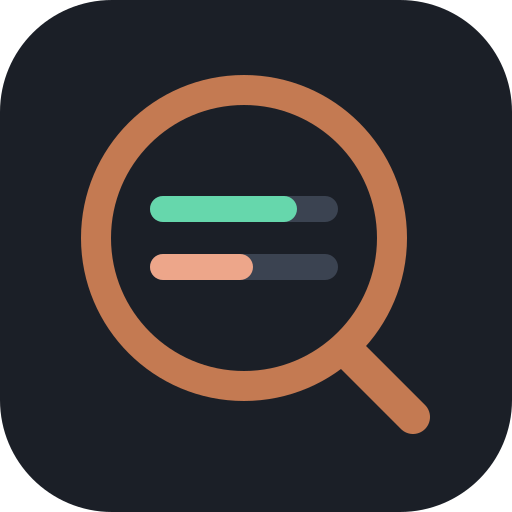

<!-- Insert inside <div class="projects"> in piconeratech/index.html. -->
<a
  class="card project"
  data-group="herramientas"
  href="https://github.com/warante/quotadock"
  target="_blank"
  rel="noopener noreferrer"
  aria-label="QuotaDock en GitHub: código y descargas para Windows"
  data-i18n-aria="quotadock.aria"
>
  <div class="project-visual has-banner banner-full">
    
    
  </div>
  <div class="project-body">
    <h3>QuotaDock</h3>
    <p data-i18n="quotadock.desc">Tus cuotas de IA junto al reloj. Un icono, dos barras y tus proveedores, sin ruido.</p>
    <div class="meta">
      <span class="tag">Windows</span>
      <span class="tag tag-store">GitHub</span>
      <span class="tag" data-i18n="quotadock.license">Código abierto · MIT</span>
    </div>
  </div>
</a>
